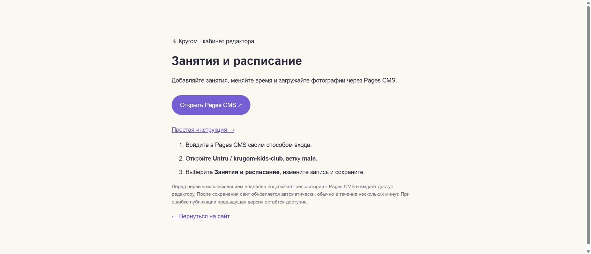
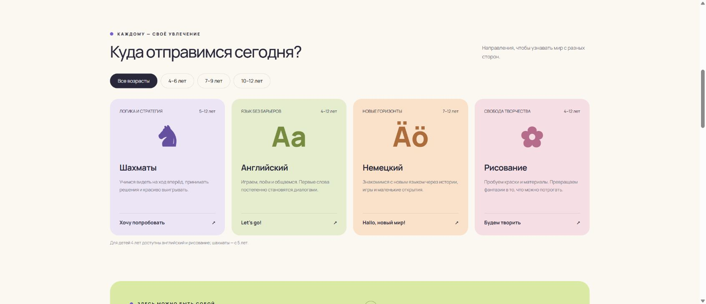
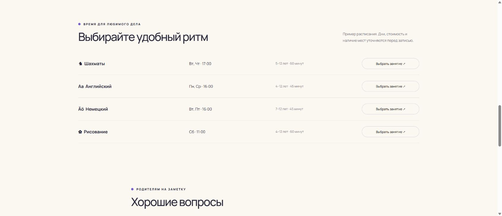

← Кабинет редактора · Открыть сайт
Как добавлять занятия и менять расписание
Памятка сотруднику детского клуба «Кругом». Программирование не требуется: вы заполняете поля, сайт подставляет данные в готовое оформление.
1. Откройте редактор
- Перейдите в Pages CMS.
- Войдите своим способом входа. Если доступ ещё не выдан, обратитесь к владельцу сайта.
- Откройте Untru / krugom-kids-club и ветку main.
- Выберите Занятия и расписание.
Если интерфейс показывает английские кнопки: Add означает «добавить», Save — «сохранить», Delete — «удалить». Конкретное расположение стандартных кнопок нужно уточнить при первом входе; названия полей ниже заданы по-русски.

2. Добавьте новое занятие
- Добавьте элемент в список занятий.
- Заполните Название занятия и Краткое описание. Название должно отличаться от остальных занятий.
- Укажите Возраст от (лет), Возраст до (лет) и Длительность (минут). Например: 5, 8 и 45.
- При необходимости заполните Стоимость, например «800 ₽ / занятие».
- Выберите Цвет карточки. Можно загрузить Фотографию или указать значок. Без фотографии и значка сайт покажет ✳.
- Если занятие уже можно публиковать, включите Показывать на сайте.
- Сохраните изменения. Чтобы сначала подготовить черновик, оставьте переключатель показа выключенным.
Не нужно отдельно добавлять занятие в анкету: оно появится там автоматически. Порядок элементов списка определяет порядок карточек.

3. Измените расписание
- Откройте нужное занятие.
- Найдите Расписание этого занятия.
- Добавьте строку или измените существующую: Дни недели, Время начала и, при необходимости, Группа или примечание.
- Время вводите в формате 17:00. Дни можно написать как «Пн, Ср» или «Сб».
- Для двух разных групп создайте две строки. Например, «Пн, Ср · 17:00 · Начинающие» и «Сб · 11:00 · Продолжающие».
- Сохраните изменения.
Если время пока не определено, список расписания можно оставить пустым. Карточка занятия при включённом показе останется на сайте.

4. Временно уберите занятие
Выключите Показывать на сайте и сохраните. Исчезнут карточка, все строки расписания этого занятия и вариант выбора в анкете. Сама запись останется в редакторе. Чтобы вернуть её, проверьте сведения, включите показ и сохраните.
5. Измените тексты или контакты
Откройте раздел Тексты, контакты и вопросы. В нём можно изменить описание клуба, примечание к расписанию, адрес, телефон и ответы родителям. Пустые контакты на сайте не отображаются. Ссылку для связи вводите целиком, начиная с https://.
6. Проверьте результат
- После сохранения подождите несколько минут: сайт публикуется автоматически.
- Откройте сайт клуба и обновите страницу.
- Проверьте карточку, строку расписания и направление в анкете. Просмотрите страницу на телефоне.
Сохранение данных и появление их на сайте происходят не одновременно. Если публикация завершилась ошибкой, посетители продолжают видеть предыдущую рабочую версию.
Если что-то не получается
| Что произошло | Что сделать |
|---|---|
| Занятие не видно | Проверьте переключатель «Показывать на сайте», сохранение и завершение публикации. |
| Нет строки в расписании | Откройте занятие и заполните хотя бы одну строку его расписания. |
| Изменения долго не появляются | Владелец проверяет последний запуск Publish website на GitHub. При красной ошибке нужно исправить указанные данные и сохранить снова. |
| Ошибка возраста или времени | Возраст «до» должен быть не меньше возраста «от». Время должно быть действительным, например 09:30. |
| Не загружается фотография | Используйте JPG, PNG, WebP или GIF. Выберите файл через поле фотографии; не вставляйте ссылку на страницу фотосервиса. |
| Ошибка в тексте | Исправьте текст и сохраните. Если удалена целая запись, попросите владельца восстановить её из истории GitHub. |
| Pages CMS показывает Loading | Попробуйте открыть сервис позже. Если зависает постоянно, сообщите владельцу: это отдельный сервис, сайт клуба при этом продолжает работать. |
Владельцу: подключение и доступ сотруднику
- Откройте Pages CMS и войдите через GitHub.
- На шаге установки официального приложения Pages CMS выберите Only select repositories и только Untru/krugom-kids-club. Проверьте выдаваемые права перед подтверждением.
- Откройте репозиторий и main. Формы настраиваются из уже добавленного файла .pages.yml.
- Если нужен отдельный сотрудник без GitHub, воспользуйтесь разделом Collaborators в Pages CMS и приглашением по его электронной почте. Приглашение отправляет владелец.
- Для первой проверки измените короткое примечание к расписанию, сохраните, дождитесь успешной публикации и проверьте результат на сайте.
Порядок первого подключения и приглашений описан в документации Pages CMS и разделе о сотрудниках.
Версия памятки: 23 октября 2026 года. Скриншоты показывают локально проверенную версию сайта с теми же исходными занятиями. После завершения входа в CMS памятку нужно дополнить скриншотами форм.